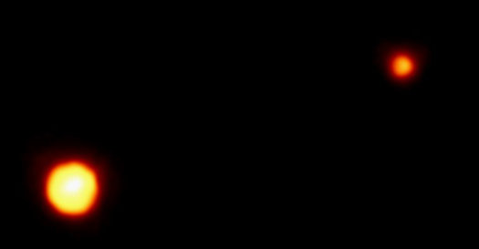

Pluton
Pluton, corps céleste considéré comme la neuvième planète du système solaire, depuis sa découverte en 1930. En 2006, l’UAI (Union Astronomique Internationale) a fait perdre à Pluton son titre de planète pour la reléguer au rang de planète naine. La nouvelle définition d’une planète (qui a modifié le statut de Pluton) établie par l’UAI, n’est toujours pas acceptée par un certain nombre de scientifiques, qui continuent à considérer Pluton comme la neuvième planète de notre système.
Pluton met 247,9 années terrestres pour accomplir sa rotation autour du Soleil, à une distance moyenne de 5 880 millions de kilomètres. L’orbite plutonienne est si particulière qu’à certains endroits de son parcours, Pluton est légèrement plus proche du soleil que ne l’est Neptune.
Pluton mesure à peu prés 2360 km de diamètre, soit deux tiers de notre Lune. Sa composition s’apparente aux objets que l’on trouve dans la ceinture de Kuiper : des corps de glace évoluant au-delà de Neptune au fin fond du système solaire. La première mission spatiale destinée à l’exploration de Pluton, par la navette spatiale New Horizons de la NASA (National Aeronautics and Space Administration), fut lancée en janvier 2006 et son approche de Pluton est prévue pour 2015. Pluton à été nommée en référence au dieu romain des enfers, dans la mythologie.
La lune de Pluton
Pendant de nombreuses années, très peu de choses étaient connues sur Pluton, mais en 1978 des astronomes ont découvert une Lune de taille assez grande, orbitant autour de Pluton à une distance de seulement 19 600 km, et la nommèrent Charon.
Depuis la Terre, on observait les orbites de Pluton et Charon passer l’une devant l’autre, ce qui permit aux astronomes entre 1985 et 1990, de déterminer précisément leur taille. Charon fait environ 1200 km de diamètre, faisant de Pluton et Charon la paire de satellites les plus proches de tout le système solaire.
Certains scientifiques ont défini Pluton et Charon comme une planète double. Pluton et Charon sont fermement attachés l’un à l’autre, ce qui signifie qu’ils sont toujours face à face pendant leur rotation. Du coup, la durée des jours et des mois de Charon est identique à celle de Pluton (6,4 jours terrestres). Bien que Charon soit vue comme un satellite de Pluton, les deux objets orbitent autour d’un même centre (que l’on appelle le barycentre) situé dans l’espace entre eux deux.

Pluton et Charon
Plan du site | Contact | Site réalisé par Mathieu Morainville.